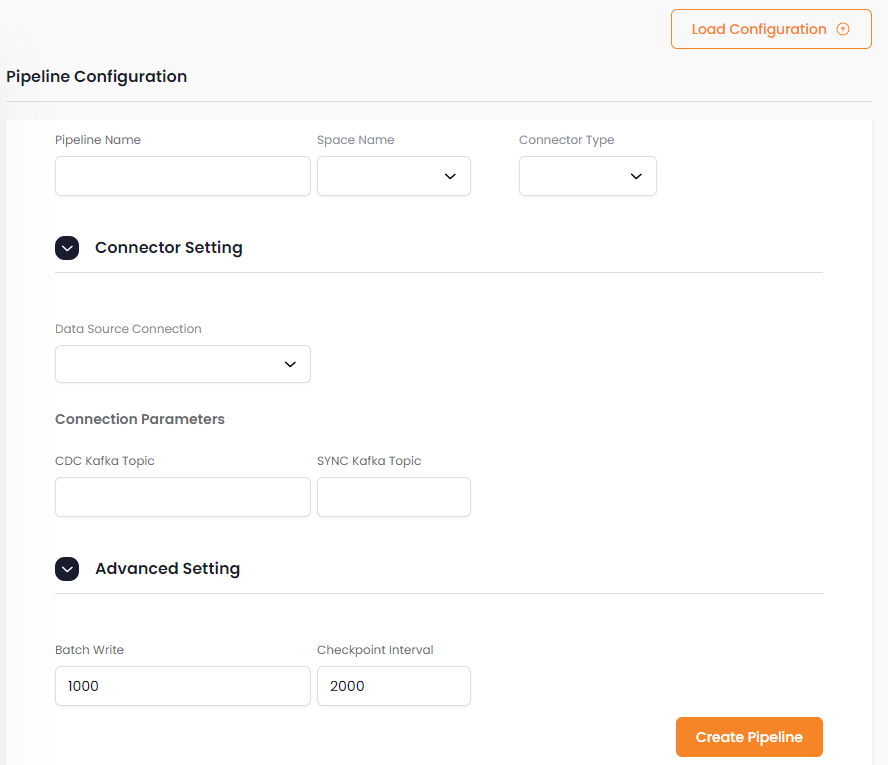
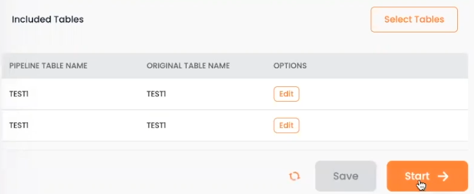

Data Pipelines define the data sources that will be used to gather data from the System of Record.
The Data Pipelines screen shows the status of the existing data pipelines.
Click on the pipeline name to view details of the pipeline.
The Monitoring tab shows a variety of real-time pipeline data.

The Tables pipeline tab displays a list of object types, and you can click on an object type to view its properties and indexes.
The Configuration tab shows read-only configuration information. The data is read-only when the pipeline is running.
The Monitoring tab shows a variety of real-time pipeline data.
Press New + to add a new data pipeline.

You may load the pipeline details by pressing Load Configuration and navigating to a configuration file, or fill in pipeline details manually.
You may then press Select Tables to choose which tables to include in the pipeline. Press Add to add the tables to the pipeline.


You can click Edit to make changes to the pipeline:
Scroll down to see the list of columns (fields) in the pipeline. Note that you can change the data type and validation rules of each field.

After you have added the tables and saved the pipeline, save the changes and press Start to start the pipeline.
The pipeline will show as Started in the Data Pipeline Status screen:

Click on the pipeline name to view details of the pipeline.
The Tables pipeline tab displays a list of object types, and you can click on an object type to view its properties and indexes.
The Configuration tab shows read-only configuration information. The data is read-only when the pipeline is running.
The Monitoring tab shows a variety of real-time pipeline data.